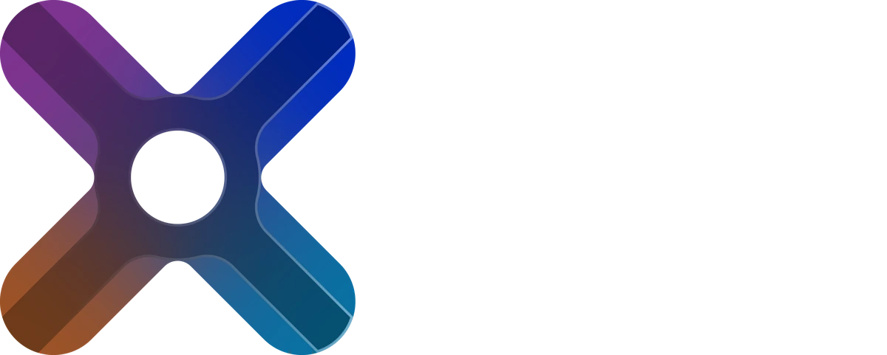
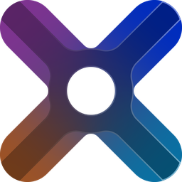

Live: the real game engine, running in your browser

Serious road engineering, in the coziest little world.
Xsections is a cozy road engineering game. Redesign the junctions of everyday life (lanes, traffic lights, roundabouts) and watch a real traffic simulation tell you if it flows. No game over. Just traffic jams melting away.
Coming to PC on Steamby Ivoria Int.
Before / after
This junction is a disaster. Fix it.
Two copies of the same junction, fed the same cars at the same moments. On the left, no signs: priority to the right. On the right, your fix. The engine does the rest, and grades both.
Starting the engine…
Your fix
Traffic
Grades follow the levels of service of the Highway Capacity Manual, from the mean delay per vehicle: the grade the game gives.
Proprietary traffic engine
Not an animation. A simulation.
Every car on this page is computed by the Xsections engine, compiled to WebAssembly and running on your machine right now. No video, no recorded paths, no server. Here is what runs under the hood.
Car-following
Drivers, not sprites
Every vehicle runs the Intelligent Driver Model, the reference model of traffic research, with its own desired speed, safe time gap and comfortable braking. Queues, stop-and-go waves and gaps emerge on their own. Nobody scripts them.
a = amax · [ 1 − (v / v0)δ − (s* / s)2 ]
s* = s0 + vT + v·Δv / (2√(amaxb))
Lane changing
Lane changes that negotiate
MOBIL weighs every lane change: is it worth it for me, and how hard would the driver behind have to brake? A politeness factor settles the rest. Merges zip, one car at a time.
ãc − ac + p (ãn − an + ão − ao) > Δath
Sight
Never faster than they can see
A driver's speed is capped so they can always stop within the distance ahead of them: a bend, a crossing, a queue around the corner. No teleporting, no panic braking at the last second.
v ≤ √(2 · b · L)
Geometry
A junction is geometry
Lanes are real curves: lines, arcs, Bézier splines. The engine finds every point where two paths cross or merge, and each vehicle reserves the zones it needs before it commits. Nobody drives through anybody.
Right of way
The Highway Code, in code
Priority to the right, stop signs, give way, priority roads, traffic lights, roundabouts where the ring goes first: French rules, French roundabouts. When four drivers arrive at once, one of them waves the others through.
Scoring
Graded the way an engineer would
Delay is the actual travel time minus the time the same trip takes on an empty road. The mean delay gives a level of service from A to F, with the thresholds traffic engineers use: stricter without lights than with them.
GradeNo lightsWith lights
A≤ 10 s≤ 10 s
B≤ 15 s≤ 20 s
C≤ 25 s≤ 35 s
D≤ 35 s≤ 55 s
E≤ 50 s≤ 80 s
F> 50 s> 80 s
Determinism
Deterministic, to the bit
A fixed step of 1/30 s and seeded random streams: the same inputs replay the same run, bit for bit. Fingerprint tests guard every change to the engine. A fix that works will always work.
Architecture
One core, every screen
The simulation is a pure C# library that knows nothing about graphics. The game draws it, this page draws it, and a headless runner plays thousands of simulated minutes to tune every level.
Datasheet
- Time step
- 1/30 s, fixed
- Car-following
- Intelligent Driver Model, improved
- Lane changing
- MOBIL, zipper merging
- Conflicts
- Geometric conflict points, zone reservations
- Rules
- Priority to the right, stop, give way, priority road, signals, roundabouts
- Pedestrians
- Crosswalks with their own reservations
- Scoring
- Delay against free flow, level of service A to F
- Determinism
- Bit-exact, seeded
- Core
- C# / .NET, renderer-agnostic
- On this page
- WebAssembly, compiled ahead of time, runs locally
Probably the most over-engineered junction in your Steam library.
Engine test bench
Break it yourself.
Roll a random junction, pick a rule, push the traffic. The engine decides every vehicle. Turn on Engine view to see the conflict points it reserves and why each car is waiting.
Priority to the right…
Conflict point
Reserved by a vehicle
Dot on a vehicle: why it is waiting
Starting the engine…
Junction
Arms
Roads
One-way roads
Junction rule
Traffic
Live
–grade, from the mean delay
–s mean delay per vehicle
0vehicles through, last minute
0stopped right now
0hesitations (priority deadlocks)
0gridlocks, should stay at 0
0conflict points computed
Same junction, same cars, five rules
The engine replays five minutes of traffic on this junction under each rule, with identical arrivals: only the rule changes. The same method tunes the game's levels, at a smaller scale.
This browser bench runs roads with one lane each way. Multi-lane junctions, zipper merges and two-lane roundabouts run in the game.
The game
Fix the junctions of everyday life.
The supermarket junction everybody hates. The five-way star nobody understands. The village street at rush hour. Redesign them, hit play, and watch them breathe again.
A real traffic simulation
Throughput, delay, queues, live graphs and an A to F grade for every junction, readable at a glance.
Prefab or handmade
Drop a prefab junction in one click, or draw every lane by hand and decorate. Both drive exactly the same.
Never a game over
No stressful timer, no red screen. Grades, hints, and all the time you need. You decide when it is good enough.
Lights, stops, roundabouts
Traffic lights with editable plans, stop and give-way signs, priority to the right, French-style roundabouts with one or two lanes.
Day, night and people
Headlights come on at dusk, pedestrians cross, and an original soundtrack keeps you company through long light-timing sessions.
Challenges and sandbox
A series of levels from a single junction to whole networks, and a sandbox where traffic and budget are all yours.
From the development build
Real captures from the in-development build. Visuals are work in progress and will keep evolving.
Community
Come watch the traffic.
Devlogs, before and after clips, and the worst junctions you send in. Follow the build wherever you scroll.

The single best way to help an indie game: put it on your wishlist.
The Steam page is on its way. The Discord hears about it first.
Wishlist on Steam Join the Discord